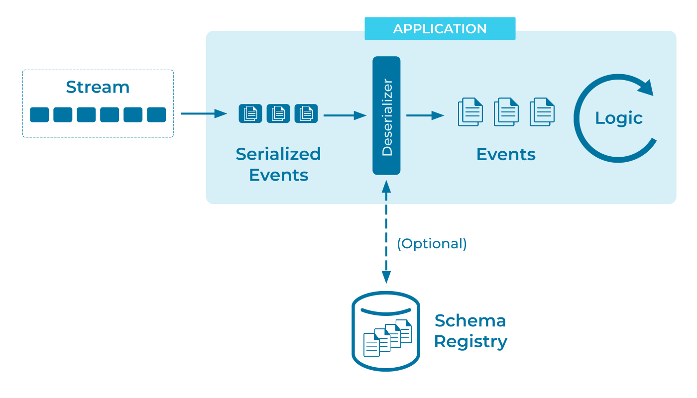

Event Deserializer
Data has a long lifecycle, often outliving the programs that originally gathered and stored it. And data originates from a wide variety of systems and programming languages. The more easily we can access that ocean of data, the richer the analysis we can perform.
In an online shopping business, data recorded by the order-processing system and from data user behavior may prove invaluable to the website design department, provided they can actually access it. It's vital to be able to read data from an Event Store regardless of which process and which department put it there originally.
To a large degree, the accessibility of data is determined at write time, by our choice of Event Serializer. Still, the story is certainly not complete until we've read the data back out.
Problem
How can I reconstruct the original event from its representation in the event streaming platform?
Solution

Use an Event Streaming Platform that integrates well with a schema registry. This makes it easy to encourage (or require) writers to record the event's data description for later use. Having both the event data and its schema readily available makes deserialization easy.
While some data formats are reasonably discoverable, in practice it becomes invaluable to have a precise, permanent record of how the data was encoded at the time it was written. This is particularly true if the data format has evolved over time and the Event Stream may contain more than one encoding of semantically-equivalent data.
Implementation
Confluent’s Schema Registry stores a versioned history of the data's schema in Apache Kafka® itself. The client libraries can then use this metadata to seamlessly reconstruct the original event data, while we can use the registry API to manually inspect the schemas, or to build libraries for other languages.
For example, in the Event Serializer pattern
we wrote a stream of fx_trade events. If we want to recall the
structure of those events we can ask ksqlDB:
DESCRIBE fx_trade;
Name : FX_TRADE
Field | Type
----------------------------------------
TRADE_ID | BIGINT (key)
FROM_CURRENCY | VARCHAR(STRING)
TO_CURRENCY | VARCHAR(STRING)
PRICE | DECIMAL(10, 5)
----------------------------------------
Or we can query the Schema Registry directly to see the structure in a machine-readable format:
curl http://localhost:8081/subjects/fx_trade-value/versions/latest | jq .
{
"subject": "fx_trade-value",
"version": 1,
"id": 44,
"schema": "{\"type\":\"record\",\"name\":\"KsqlDataSourceSchema\",\"namespace\":\"io.confluent.ksql.avro_schemas\",\"fields\":[{\"name\":\"FROM_CURRENCY\",\"type\":[\"null\",\"string\"],\"default\":null},{\"name\":\"TO_CURRENCY\",\"type\":[\"null\",\"string\"],\"default\":null},{\"name\":\"PRICE\",\"type\":[\"null\",{\"type\":\"bytes\",\"scale\":5,\"precision\":10,\"connect.version\":1,\"connect.parameters\":{\"scale\":\"5\",\"connect.decimal.precision\":\"10\"},\"connect.name\":\"org.apache.kafka.connect.data.Decimal\",\"logicalType\":\"decimal\"}],\"default\":null}],\"connect.name\":\"io.confluent.ksql.avro_schemas.KsqlDataSourceSchema\"}"
}
Unpacking that schema field reveals the Avro specification:
curl http://localhost:8081/subjects/fx_trade-value/versions/latest | jq -rc .schema | jq .
{
"type": "record",
"name": "KsqlDataSourceSchema",
"namespace": "io.confluent.ksql.avro_schemas",
"fields": [
{
"name": "FROM_CURRENCY",
"type": [
"null",
"string"
],
"default": null
},
{
"name": "TO_CURRENCY",
"type": [
"null",
"string"
],
"default": null
},
{
"name": "PRICE",
"type": [
"null",
{
"type": "bytes",
"scale": 5,
"precision": 10,
"connect.version": 1,
"connect.parameters": {
"scale": "5",
"connect.decimal.precision": "10"
},
"connect.name": "org.apache.kafka.connect.data.Decimal",
"logicalType": "decimal"
}
],
"default": null
}
],
"connect.name": "io.confluent.ksql.avro_schemas.KsqlDataSourceSchema"
}
An Avro library can use this schema to deserialize the events seamlessly. And any client libraries that are Schema Registry-aware can automate this lookup, allowing us to forget about encodings entirely and focus on the data.
Considerations
In addition to Avro, Schema Registry supports Protobuf and JSON Schema. See Event Serializer for a discussion of these formats.
While the choice of serialization format is important, it doesn't have to be set in stone. For example, it's straightforward to translate between supported formats with ksqlDB. For more complex scenarios, we have several strategies for managing schema migration:
- Schema Compatibility discusses the kinds of "safe" schema changes that Avro is designed to handle transparently.
- Event Translators can convert between different encodings to aid consumption by different systems.
- Schema Evolution discusses splitting and joining streams to simplify serving consumers that can only handle certain versions of the event's schema.
- An Event Standardizer can reformat disparate data encodings into a single unified format.
- And we always have the option of handling encoding problems directly in code with a Schema-on-Read strategy.
References
- The counterpart of an event deserializer (for reading) is an Event Serializer (for writing).
- Serializers and deserializers are closely related to Data Contracts, in which we want to adhere to a specific serialization format, and constrain the individual events to a certain schema within that format.
- See also: Event Mapper.